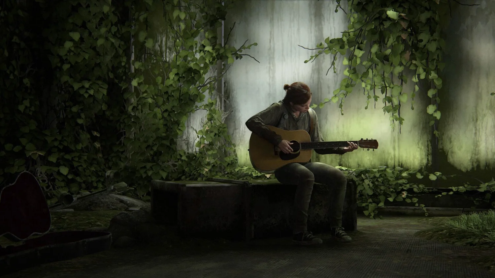

The colors, lighting, environments, and art styles we see can completely change the way we experience a story. The Art Behind the Experience explores how visual design creates emotion and makes movies and games memorable.

The Last of Us game series is a very good example of how art can make the player feel something. Even though the game takes place in a post-apocalyptic world, many of the environments are still beautiful. The game uses things like color, lighting, and nature to create a different feeling depending on where you are. Overgrown buildings, trees, and sunlight can make places that should feel scary or abandoned feel peaceful and familiar.
This contrast is one of the things that makes The Last of Us stand out. The world is dangerous, but the environments can still have a cozy feeling to them. The art helps make the player feel connected to the world instead of making it feel like just another setting for the story.
Even though The Last of Us can be scary, the scares can hit you by surprise because you become so drawn into the beautiful story and the environments around you. The game uses nature, lighting, and color to create environments that can feel peaceful and familiar. Because you become comfortable in these environments, the scary moments can feel even more unexpected.
Unlike The Last of Us, Resident Evil is a series that is meant to make you feel scared and uncomfortable. For this example, Resident Evil 7 keeps you on the edge of your seat through its muted and uncomfortable colors, dim lighting, and the fear of not knowing what is behind the next door. The environments don't feel inviting or safe, which makes you constantly wonder what could happen next. This shows how art doesn't always have to be beautiful to be effective. The Last of Us uses its environments to draw you in and make you feel connected to the world, while Resident Evil uses its environments to make you feel vulnerable and afraid.